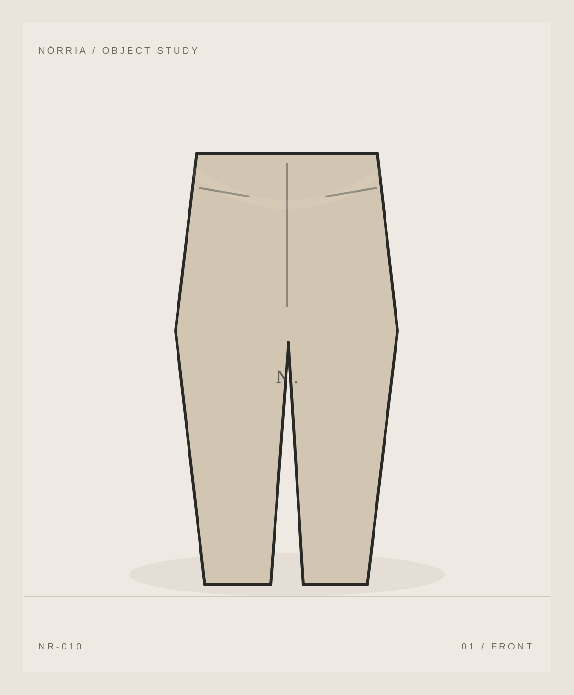

NÓRRIA / OBJECT STUDIES / 2026
O olhar encontra a forma.
Um ensaio de composição construído com ilustrações próprias. Ainda não existe produção fotográfica nem coleção física.


Volume & silêncio
01 / NÓRRIA ↗
Matéria & movimento
02 / NÓRRIA ↗
Cor & intervalo
03 / NÓRRIA ↗
O gesto essencial
04 / NÓRRIA ↗Ilustrações vetoriais conceituais; não representam produtos fabricados ou fotografados.
Explorar coleção ↗